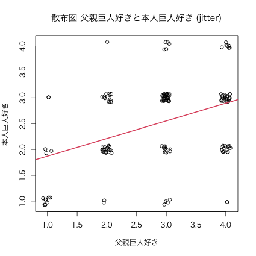

tmp <- table(父親巨人好き = nu03$R14, 本人巨人好き = nu03$R13)
tmp
本人巨人好き
父親巨人好き 大嫌い やや嫌い やや好き 大好き
大嫌い 10 3 2 0
やや嫌い 2 21 13 1
やや好き 4 12 30 5
大好き 2 15 24 7
| 父親＼本人 | 大嫌い | やや嫌い | やや好き | 大好き |
|---|---|---|---|---|
| 大嫌い | 10 | 3 | 2 | 0 |
| やや嫌い | 2 | 21 | 13 | 1 |
| やや好き | 4 | 12 | 30 | 5 |
| 大好き | 2 | 15 | 24 | 7 |
図1: 父親巨人好き と 本人巨人好き
addmargins(tmp) # addmargins() で周辺度数を計算
本人巨人好き
父親巨人好き 大嫌い やや嫌い やや好き 大好き Sum
大嫌い 10 3 2 0 15
やや嫌い 2 21 13 1 37
やや好き 4 12 30 5 51
大好き 2 15 24 7 48
Sum 18 51 69 13 151
| 父親＼本人 | 大嫌い | やや嫌い | やや好き | 大好き | 合計 Sum |
|---|---|---|---|---|---|
| 大嫌い | 10 | 3 | 2 | 0 | 15 |
| やや嫌い | 2 | 21 | 13 | 1 | 37 |
| やや好き | 4 | 12 | 30 | 5 | 51 |
| 大好き | 2 | 15 | 24 | 7 | 48 |
| 合計 Sum | 18 | 51 | 69 | 13 | 151 |
prop.table(tmp, 1)
本人巨人好き
父親巨人好き 大嫌い やや嫌い やや好き 大好き
大嫌い 0.66666667 0.20000000 0.13333333 0.00000000
やや嫌い 0.05405405 0.56756757 0.35135135 0.02702703
やや好き 0.07843137 0.23529412 0.58823529 0.09803922
大好き 0.04166667 0.31250000 0.50000000 0.14583333
round(prop.table(tmp, 1), 2) # round() で小数点以下2桁に限定
本人巨人好き
父親巨人好き 大嫌い やや嫌い やや好き 大好き
大嫌い 0.67 0.20 0.13 0.00
やや嫌い 0.05 0.57 0.35 0.03
やや好き 0.08 0.24 0.59 0.10
大好き 0.04 0.31 0.50 0.15
par(family = "HiraKakuProN-W3") ## ← Windowsでは実行しない plot(nu03$r14, nu03$r13, main = "散布図 父親巨人好きと本人巨人好き", xlab = "父親巨人好き", ylab = "本人巨人好き")
図2: 散布図 父親巨人好きと本人巨人好き
par(family = "HiraKakuProN-W3") ## ← Windowsでは実行しない plot(jitter(nu03$r14), jitter(nu03$r13), main = "散布図 父親巨人好きと本人巨人好き (jitter)", xlab = "父親巨人好き", ylab = "本人巨人好き")
図3: 散布図 父親巨人好きと本人巨人好き
cor(nu03$r14, nu03$r13) # 欠測値 NA があると計算不可
[1] NA
cor(nu03$r14, nu03$r13, use = "pairwise") # ペアワイズ (ペアが揃っている) で計算
[1] 0.4082542
図4: 散布図 父親巨人好きと本人巨人好き

図5: 散布図 父親巨人好きと本人巨人好き
lm(r13 ~ r14, data = nu03)
Call:
lm(formula = r13 ~ r14, data = nu03)
Coefficients:
(Intercept) r14
1.5287 0.3414
formula = r13 ~ r14summary(lm(r13 ~ r14, data = nu03))
Call:
lm(formula = r13 ~ r14, data = nu03)
Residuals:
本人巨人好き
Min 1Q Median 3Q Max
-1.8943 -0.5529 0.1057 0.4471 1.7885
Coefficients:
Estimate Std. Error t value Pr(>|t|)
(Intercept) 1.52865 0.18975 8.056 0.000000000000234 ***
r14 0.34141 0.06254 5.459 0.000000195495263 ***
---
Signif. codes: 0 ‘***’ 0.001 ‘**’ 0.01 ‘*’ 0.05 ‘.’ 0.1 ‘ ’ 1
Residual standard error: 0.7469 on 149 degrees of freedom
( 2 個の観測値が欠損のため削除されました )
Multiple R-squared: 0.1667, Adjusted R-squared: 0.1611
F-statistic: 29.8 on 1 and 149 DF, p-value: 0.0000001955
| Coefficients | Estimate | Std. Error | t value | Pr(>｜t｜) |
|
|---|---|---|---|---|---|
| 係数 | 推定値 | 標準誤差 | t値 | 有意確率 | |
| (Intercept) | 1.52865 | 0.18975 | 8.056 | 0.000000000000234 | *** |
| 父親巨人好き | 0.34141 | 0.06254 | 5.459 | 0.000000195495263 | *** |
*** 0.1％有意 , ** 1％有意 , * 5％有意 , . 10％有意 , 印なし 非有意Residual standard error: 0.7469 on 149 degrees of freedom ( 2 個の観測値が欠損のため削除されました ) Multiple R-squared: 0.1667, Adjusted R-squared: 0.1611 F-statistic: 29.8 on 1 and 149 DF, p-value: 0.0000001955
lm(r13 ~ r14, data = nu03)
Call:
lm(formula = r13 ~ r14, data = nu03)
Coefficients:
(Intercept) r14
1.5287 0.3414
lm(r14 ~ r13, data = nu03)
Call:
lm(formula = r14 ~ r13, data = nu03)
Coefficients:
(Intercept) r13
1.6489 0.4882
table()cor()plot()cov()ppcor::pcor()lm()abline(lm())summary(lm())| [1] | ポール G.ホーエル. 初等統計学 第4版. 培風館, 1981. |